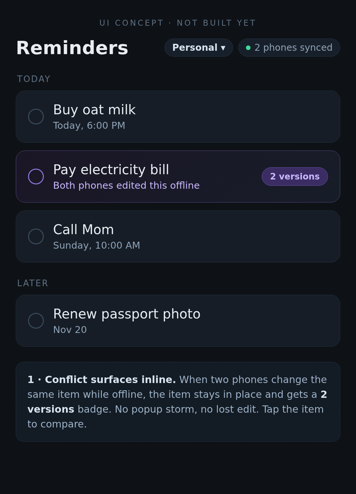
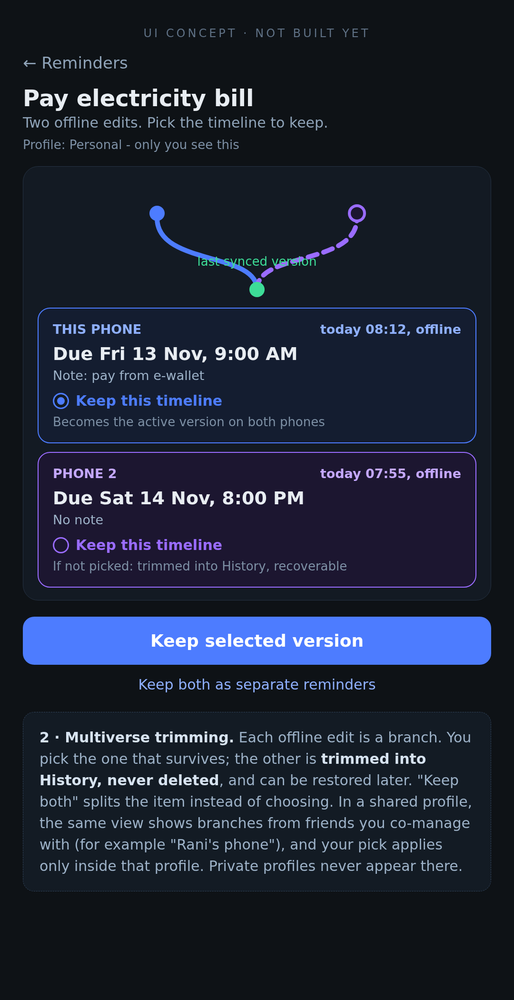
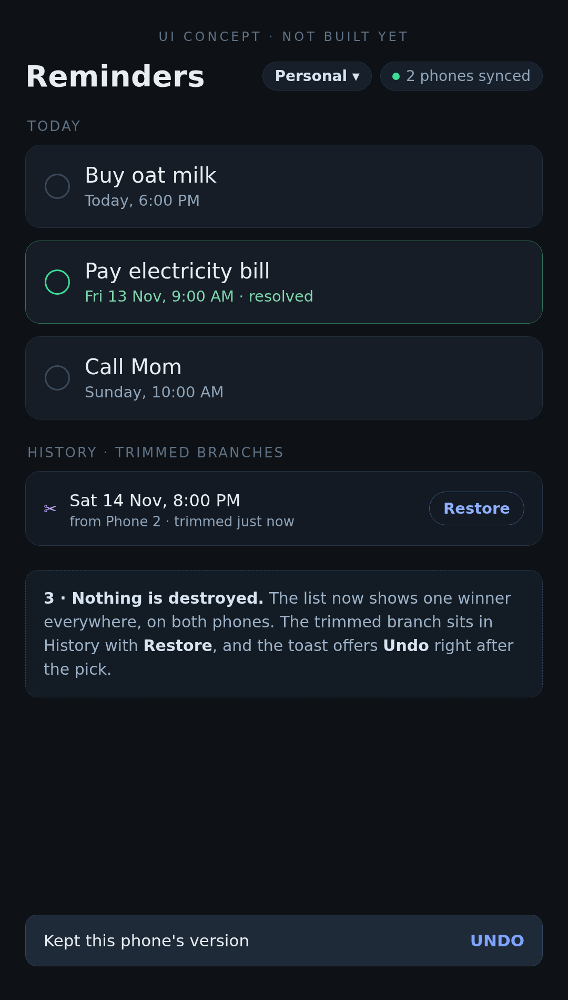

UI concept - not built yet
Multiverse trimming conflict concept
How the local-first reminders app could resolve edits made offline on two phones: every offline edit becomes a branch, you pick the timeline that survives, and the other is trimmed into History, never deleted.
The flow
- Conflict surfaces inline: the item keeps its place in the list and gets a "2 versions" badge. No popup, no lost edit.
- Tap it and both timelines appear as branches with their device and offline time. The fate of each branch is stated before you confirm: the pick becomes active on both phones, the other moves to History, recoverable.
- After the trim, both phones show one winner, a toast offers Undo, and History keeps the trimmed branch with Restore. Nothing is silently overwritten.
Screen 1 - the badge

Screen 2 - the multiverse

The conflict screen states its audience: this example is the Personal profile, visible only to the owner. In a shared profile co-managed with friends, the same view would show their devices' branches too, and the pick applies only inside that profile. Private profiles never appear there.
Screen 3 - nothing is destroyed
